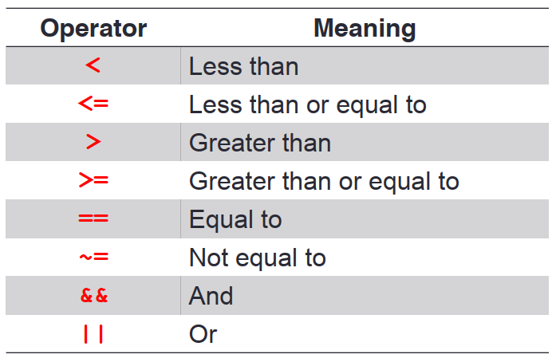
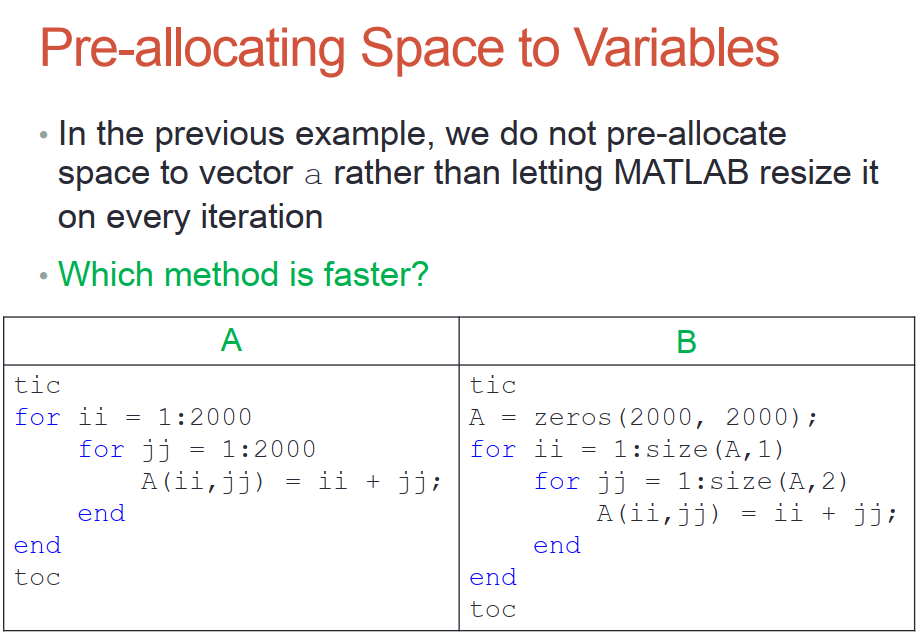

MATLAB笔记2：程序结构和方法
Structured Programming & Function
程序结构
循环结构实例
1
2
3
4
5for i=1:10
x=linspace(0,10,101);
plot(x,sin(x+i));
print(gcf,'-deps',strcat('plot',num2str(i),'.ps'));
end逻辑运算符
if-else
1
2
3
4
5
6
7if condition1
statement1
elseif condition2
statement2
else
statement3
end1
2
3
4
5if rem(a, 2) == 0
disp('a is even')
else
disp('a is odd')
endrem()函数计算余数
switch
1
2
3
4
5
6
7
8
9
10switch input_num
case -1
disp('negative 1');
case 0
disp('zero');
case 1
disp('positive 1');
otherwise
disp('other value');
endwhile循环
1
2
3
4n = 1;
while prod(1:n) < 1e100
n = n + 1;
endprod(a)函数计算向量a元素的积，在这里计算n的阶乘
for循环
1
2
3for variable=start : increment : end
commands
end1
2
3
4for n=1:10
a(n)=2^n;
end
disp(a)关于预分配内存加快程序速度
tic 和 toc 可以计算时间间隔，结果是B所花时间更少
在我的机器上结果反而是相反的！这点不太清楚
break
1
2
3
4
5
6
7
8
9
10x = 2; k = 0; error = inf;
error_threshold = 1e-32;
while error > error_threshold
if k > 100
break
end
x = x - sin(x)/cos(x);
error = abs(x - pi);
k = k + 1;
end
Fuction
1
2
3
4
5
6
7
8
9
10function y = mean(x)
% MEAN Average or mean value.
% S = MEAN(X) is the mean value of the elements in X
% if X is a vector. For matrices, S is a row
% vector containing the mean value of each column.
if nargin==2 && ischar(dim)
flag = dim;
elseif nargin < 3
flag = 'default';
end- 结果：
1
2
3
4function [x,y] = getxandy(a,b)
% 获得ab，可以返回两个值
x = a+b;
y = a-b;1
2
3
4
5
6
7
8
9
10>> [a,b] = getxandy(2,3)
a =
5
b =
-1
- function中的默认参数

1
2
3
4
5function [volume]=pillar(Do,Di,height)
if nargin==2,
height=1;
end
volume=abs(Do.^2-Di.^2).*height*pi/4;判断nargin，即input的参数个数如果为2，设置height值默认为1
结果1
2function test(varargin)
disp(varargin{1:numel(varargin)})1
2>> test([2 3 4])
2 3 4 - function handle
1
2
3f = @(x) exp(-2*x);
x = 0:0.1:2;
plot(x, f(x));x为 function handle 传入的参数，对x进行exp()运算（求e的-2x次幂），返回结果
- B站教程链接
台大郭彦甫matlab教程: 点击链接